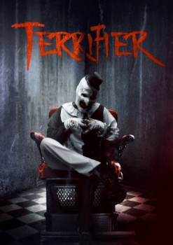

Terrifier (2018)


No hay nada más terrorífico que un payaso después de medianoche...

País:Estados Unidos, 85 minutos.
Idiomas:Inglés
GénerosTerror, Suspenso
Director/es:Damien Leone
Guionistas:Damien Leone
Códec de vídeo:Unknown
Número: 2107
TomatoMeter:

--

--
Clasificación IMDb:


5.5/10 (81.5K votos)
Certificación:18
Argumento:
El payaso psicópata Art, aterroriza a dos chicas durante la noche de Halloween, matando a todos aquellos que se interponen en su camino.
Reparto
David Howard Thornton (Como Art the Clown), Jenna Kanell (Como Tara Heyes), Samantha Scaffidi (Como Victoria Heyes), Catherine Corcoran (Como Dawn), Pooya Mohseni (Como Cat Lady)
Medio: Archivo de video,
Localización: D:\PELICULAS\SAGAS\Terrifier (1.2)\Terrifier 1 (2016) DUAL\[HD] Terrifier 1 (2016) DUAL.avi
Prestado: No
Rel. aspecto: Unknown